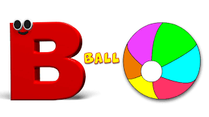

The letter A is derived from the Phoenician letter aleph—a western Semitic word referring to the
aforementioned beast of burden. Aleph can be traced back to the Middle Bronze Age and the Proto-Sinaitic
script found in parts of Egypt and Canaan from around 1850 BCE (Before the Common Era). The character comes
from an ancient Egyptian hieroglyph or pictogram depicting an oxs head. Interestingly, the original image
was reminiscent of the modern letter K. The letter originally served as a glottal stop (a stop consonant) in
the Phoenician language such as a t or p in the middle of a word.
Alphabet B

About Alphabet "B"
The letter B was part of the Phoenician alphabet more than 3000 years ago in 1000 BCE. ... In Hebrew, the
letter was called beth, bet, or bayt which also means “house.” In the Greek alphabet, the letter took on the
name beta, and the word beta has stuck around in English to refer to the second in any series.
Alphabet C
About Alphabet "C"
Today, the letter C is commonly used as an abbreviation for the temperature scale Celsius and to stand for
the word “century.” It is also the name of a computer programming language, C, developed by AT&T Bell Labs
in the late 1960s and early 1970s.
Alphabet D
About Alphabet "D"
The Semitic letter Dāleth may have developed from the logogram for a fish or a door. There are many different
Egyptian hieroglyphs that might have inspired this. In Semitic, Ancient Greek and Latin, the letter
represented /d/; in the Etruscan alphabet the letter was superfluous but still retained (see letter B). The
equivalent Greek letter is Delta, Δ.
Alphabet E
About Alphabet "E"
The Latin letter 'E' differs little from its source, the Greek letter epsilon, "E"
. This in turn comes from the Semitic letter hê, which has been suggested to have started as a praying or
calling human figure (hillul 'jubilation'), and was most likely based on a similar Egyptian hieroglyph that
indicated a different pronunciation. In Semitic, the letter represented /h/ (and /e/ in foreign words); in
Greek, hê became the letter epsilon, used to represent /e/. The various forms of the Old Italic script and
the Latin alphabet followed this usage.
Alphabet F
About Alphabet "F"
The origin of 'F' is the Semitic letter waw that represented a sound like /v/ or /w/. Graphically it
originally probably depicted either a hook or a club. It may have been based on a comparable Egyptian
hieroglyph such as that which represented the word mace (transliterated as ḥ(dj)).The Phoenician form of the
letter was adopted into Greek as a vowel, upsilon (which resembled its descendant 'Y' but was also the
ancestor of the Roman letters 'U', 'V', and 'W'); and, with another form, as a consonant, digamma, which
indicated the pronunciation /w/, as in Phoenician. Latin 'F,' despite being pronounced differently, is
ultimately descended from digamma and closely resembles it in form.
Alphabet G
About Alphabet "G"
The letter 'G' was introduced in the Old Latin period as a variant of 'C' to distinguish voiced ɡ from
voiceless /k/.
The recorded originator of 'G' is freedman Spurius Carvilius Ruga, who added letter G to the teaching of the
Roman alphabet during the 3rd century BC: he was the first Roman to open a fee-paying school, around 230
BCE. At this time, 'K' had fallen out of favor, and 'C', which had formerly represented both /ɡ/ and /k/
before open vowels, had come to express /k/ in all environments.
Alphabet H
About Alphabet "H"
The original Semitic letter Heth most likely represented the voiceless pharyngeal fricative (ħ) The form of the letter probably stood for a fence or posts.
The Greek Eta 'Η' in archaic Greek alphabets, before coming to represent a long vowel, /ɛː/, still
represented a similar sound, the voiceless glottal fricative /h/. In this context, the letter eta is also
known as Heta to underline this fact. Thus, in the Old Italic alphabets, the letter Heta of the Euboean
alphabet was adopted with its original sound value /h/.
Alphabet I
About Alphabet "I"
In the Phoenician alphabet, the letter may have originated in a hieroglyph for an arm that represented a voiced pharyngeal fricative (/ʕ/) in Egyptian, but was reassigned to /j/ (as in English "yes") by Semites, because their word for "arm" began with that sound. This letter could also be used to represent /i/, the close front unrounded vowel, mainly in foreign words.
The Greeks adopted a form of this Phoenician yodh as their letter iota (⟨Ι, ι⟩) to represent /i/, the same as in the Old Italic alphabet
Alphabet J
About Alphabet "J"
The letter J used to be used as the swash letter I, used for the letter I at the end of Roman numerals when following another I, as in XXIIJ or xxiij instead of XXIII or xxiii for the Roman numeral representing 23. A distinctive usage emerged in Middle High German. Gian Giorgio Trissino (1478 – 1550) was the first to explicitly distinguish I and J as representing separate sounds, in his Ɛpistola del Trissino de le lettere nuωvamente aggiunte ne la lingua italiana ("Trissino's epistle about the letters recently added in the Italian language") of 1524.
Alphabet K
About Alphabet "K"
The letter K comes from the Greek letter Κ (kappa), which was taken from the Semitic kaph, the symbol for an open hand. This, in turn, was likely adapted by Semitic tribes who had lived in Egypt from the hieroglyph for "hand" representing /ḏ/ in the Egyptian word for hand, ⟨ḏ-r-t⟩ (likely pronounced /ˈcʼaːɾat/ in Old Egyptian). The Semites evidently assigned it the sound value /k/ instead, because their word for hand started with that sound.
Alphabet L
About Alphabet "L"
In English orthography, ⟨l⟩ usually represents the phoneme /l/, which can have several sound values, depending on the speaker's accent, and whether it occurs before or after a vowel. The alveolar lateral approximant (the sound represented in IPA by lowercase [l]) occurs before a vowel, as in lip or blend, while the velarized alveolar lateral approximant (IPA [ɫ]) occurs in bell and milk.
Alphabet M
About Alphabet "M"
The letter M is derived from the Phoenician Mem, via the Greek Mu (Μ, μ). Semitic Mem is most likely derived from a "Proto-Sinaitic" (Bronze Age) adoption of the "water" ideogram in Egyptian writing. The Egyptian sign had the acrophonic value /n/, from the Egyptian word for "water", nt; the adoption as the Semitic letter for /m/ was presumably also on acrophonic grounds, from the Semitic word for "water", *mā(y)-.
Alphabet N
About Alphabet "N"
One of the most common hieroglyphs, snake, was used in Egyptian writing to stand for a sound like the English ⟨J⟩, because the Egyptian word for "snake" was djet. It is speculated by many[who?] that Semitic people working in Egypt adapted hieroglyphics to create the first alphabet, and that they used the same snake symbol to represent N, because their word for "snake" may have begun with that sound. However, the name for the letter in the Phoenician, Hebrew, Aramaic and Arabic alphabets is nun, which means "fish" in some of these languages. The sound value of the letter was /n/—as in Greek, Etruscan, Latin and modern languages.
Alphabet O
About Alphabet "O"
Its graphic form has remained fairly constant from Phoenician times until today. The name of the Phoenician letter was ʿeyn, meaning "eye", and indeed its shape originates simply as a drawing of a human eye (possibly inspired by the corresponding Egyptian hieroglyph, cf. Proto-Sinaitic script). Its original sound value was that of a consonant, probably [ʕ], the sound represented by the cognate.
Alphabet P
About Alphabet "P"
The Semitic Pê (mouth), as well as the Greek Π or π (Pi), and the Etruscan and Latin letters that developed from the former alphabet, all symbolized /p/, a voiceless bilabial plosive.
Alphabet Q
About Alphabet "Q"
The Semitic sound value of Qôp was /q/ (voiceless uvular stop), and the form of the letter could have been based on the eye of a needle, a knot, or even a monkey with its tail hanging down.[2][3][4] /q/ is a sound common to Semitic languages, but not found in many European languages.[a] Some have even suggested that the form of the letter Q is even more ancient: it could have originated from Egyptian hieroglyphics
Alphabet R
About Alphabet "R"
The original Semitic letter may have been inspired by an Egyptian hieroglyph for tp, "head".[citation needed] It was used for /r/ by Semites because in their language, the word for "head" was rêš (also the name of the letter). It developed into Greek 'Ρ' ῥῶ (rhô) and Latin R.
Alphabet S
About Alphabet "S"
Ancient Greek did not have a /ʃ/ phoneme, so the derived Greek letter sigma (Σ) came to represent the voiceless alveolar sibilant /s/. While the letter shape Σ continues Phoenician šîn, its name sigma is taken from the letter samekh, while the shape and position of samekh but name of šîn is continued in the xi.
Alphabet T
About Alphabet "T"
Taw was the last letter of the Western Semitic and Hebrew alphabets. The sound value of Semitic Taw, Greek alphabet Tαυ (Tau), Old Italic and Latin T has remained fairly constant, representing [t] in each of these; and it has also kept its original basic shape in most of these alphabets.
Alphabet U
About Alphabet "U"
The letter u ultimately comes from the Phoenician letter waw by way of the letter y. See the letter y for details.
During the late Middle Ages, two forms of 'v' developed, which were both used for its ancestor 'u' and modern 'v'. The pointed form 'v' was written at the beginning of a word, while a rounded form 'u' was used in the middle or end, regardless of sound. So whereas 'through' and 'excuse' appeared as in modern printing, 'have' and 'upon' were printed 'haue' and 'vpon', respectively.
Alphabet V
About Alphabet "V"
In Latin, a stemless variant shape of the upsilon was borrowed in early times as V — either directly from the Western Greek alphabet or from the Etruscan alphabet as an intermediary — to represent the same /u/ sound, as well as the consonantal /w/, num — originally spelled NVM — was pronounced /num/ and via was pronounced [ˈwia]. From the 1st century AD on, depending on Vulgar Latin dialect, consonantal /w/ developed into /β/ (kept in Spanish), then later to /v/.
Alphabet W
About Alphabet "W"
The classical Latin alphabet, from which the modern European alphabets derived, did not have the "W' character. The "W" sounds were represented by the Latin letter "V" (at the time, not yet distinct from "U").
The sounds /w/ (spelled ⟨V⟩) and /b/ (spelled ⟨B⟩) of Classical Latin developed into a bilabial fricative /β/ between vowels in Early Medieval Latin. Therefore, ⟨V⟩ no longer adequately represented the labial-velar approximant sound /w/ of Germanic phonology.
Alphabet X
About Alphabet "X"
In Ancient Greek, 'Χ' and 'Ψ' were among several variants of the same letter, used originally for /kʰ/ and later, in western areas such as Arcadia, as a simplification of the digraph 'ΧΣ' for /ks/. In the end, more conservative eastern forms became the standard of Classical Greek, and thus 'Χ' (Chi) stood for /kʰ/ (later /x/; palatalized to [ç] in Modern Greek before front vowels). However, the Etruscans had taken over 'Χ' from western Greek, and it therefore stands for /ks/ in Etruscan and Latin.
Alphabet Y
About Alphabet "Y"
The oldest direct ancestor of English letter Y was the Semitic letter waw (pronounced as [w]), from which also come F, U, V, and W. See F for details. The Greek and Latin alphabets developed from the Phoenician form of this early alphabet.
Since Late Middle English, the letter Y came to be used in a number of words where earlier Middle English spelling contained the letter yogh (Ȝȝ), which developed from the letter G, ultimately from Semitic gimel – as described below (As a side note - Modern Greek lowercase gamma <γ> is somewhat similarly shaped to the lowercase letter ).
Alphabet Z
About Alphabet "Z"
The letter z was part of the earliest form of the Latin alphabet, adopted from Etruscan. Because[citation needed] the sound /z/ in Latin changed to /r/ by rhotacism in the fifth century BC, z was dropped and its place given to the new letter g. In the 1st century BC, z was reintroduced at the end of the Latin alphabet to represent the sound of the Greek zeta /dz/, as the letter y was introduced to represent the sound of the Greek upsilon /y/.